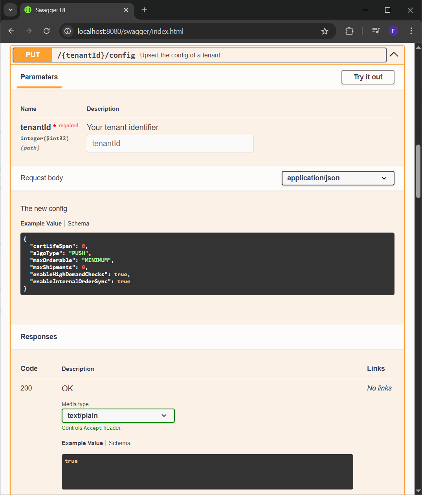
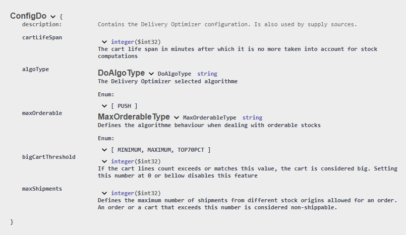

Raisons juridiques et configuration du module
Support de multiples raisons juridiques
Le module Delivery Optimizer (DO) est prévu pour supporter plusieurs raisons juridiques, c'est à dire qu’elles peuvent coexister sans que l’une puisse accéder aux données d’une autre. Ceci peut être utile si vous souhaitez utiliser le module DO pour plusieurs marques ou zones géographiques par exemple.
Au sein du module il s’agit un nombre entier strictement supérieur à 0 nommé tenantId qu’il sera nécessaire de renseigner dans la route de chaque appel API afin d’indiquer au module quelle raison juridique est concernée par l’appel.
Les raisons juridiques sont sauvegardées en base et disposent de caractéristiques supplémentaires :
- Une configuration afin de pouvoir personnaliser l’utilisation du module DO.
- Des utilisateurs disposant de droits spécifiques
Configuration du module
Chaque raison juridique dispose d’une configuration afin de pouvoir personnaliser son utilisation du module DO.
La configuration est ajoutée par Altazion au moment de la création des raisons juridiques. Si vous utilisez les outils OMS fournis par Altazion, l’édition de la configuration se fera depuis votre gestion commerciale dans les options des sources d’approvisionnement.
Autrement il est possible de modifier la configuration en appelant l'un des points API suivant :
PUT : {tenantId}/sfs-config
PUT : {tenantId}/config

Pour utiliser ce point, il est nécessaire de passer un objet de type ConfigDo dans le body de la requête.
L'objet ConfigDo contient les champs suivants :
- cartLifeSpan (défaut : 15). Détermine la durée de validité en minutes d'un panier. Lorsqu'elle est dépassée, les stocks réservés par le panier ne sont plus compatibilisés par Delivery Optimizer et le panier est supprimé.
- algoType (défaut : "PUSH"). Détermine le type d'algorithme utilisé par Delivery Optimizer. À ce jour, seul l'algorithme PUSH existe.
- maxOrderable (défaut : "MINIMUM). Détermine la méthode de calcul de la quantité maximum de stock commandable pour un produit.
- maxShipments (défaut : illimité). Détermine le nombre maximum d'expéditions différentes pour une commande/un panier. Autrement dit, il s'agit du nombre maximum d'origines de stock différentes qui peuvent être sollicitées pour le traitement d'une commande/un panier. Concrètement, il s'agit de la taille maximum du tableau DoResponse.splits. Si ce nombre est dépassé, toutes les lignes du panier sont concidérées comme étant non expédiables et sont donc renvoyées dans le champ DoResponse.nonShippable.
- enableInternalOrderSync (défaut : false). Si true, active la synchronisation périodique interne au module des commandes contenus dans REDIS vers MongoDB. À mettre à false si vous utilisez une méthode de synchronisation externe, via un batch ou le point API de synchro des commandes par exemple.
Comme pour tous les autres points API, vous pouvez retrouver la définition de l'objet en anglais dans le swagger du module :
